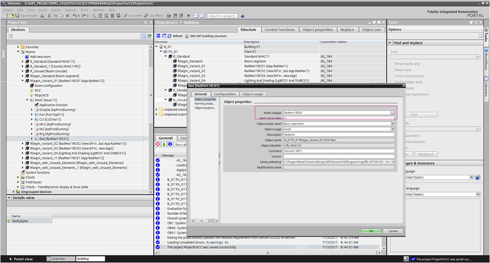
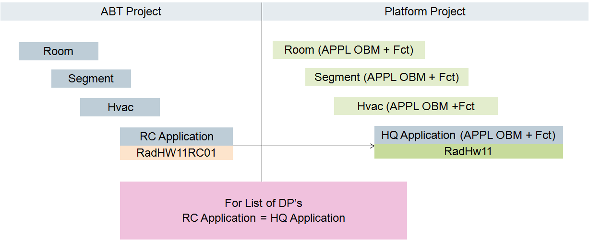
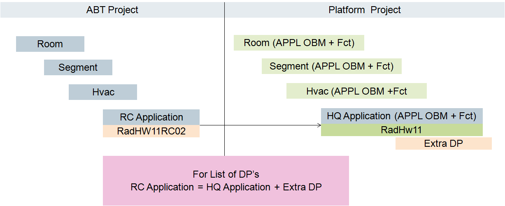
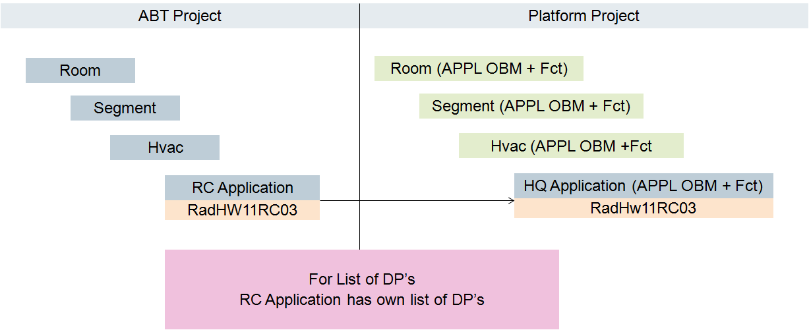
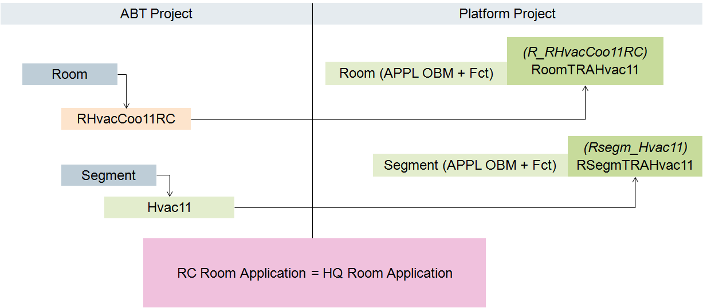

Desigo Automation Application Modeling
Application Modeling with ABT
- The ABT tool is used to create a modified headquarter application.
- Export the RC solution as a SiB-X file.

RC Equal to the HQ Application
RC Application is Equal to the HQ Application
The RC application cannot have any changes to the data points for display. Altered algorithms or controls are permitted. The graphic is not correctly displayed if the graphic depiction has fewer BACnet objects than exist in the HQ application.

RC Application is Equal to the HQ Application with an Additional Data Point
The same requirements as for the previous application solution. Additional data points integrated in the system are only displayed in the System Browser.

Required Changes
The existing HQ application must be modified at two locations in order to display the corresponding RC application graphic template:
- Object model assignment
- Function assignment
Create a New RC Application with RC Object Model
Scenario: The RC (L2-Region) or project (L4-Project) creates its own application with a number of data points used that does not match the HQ application. An own object model must be created to use the application.

NOTE: If, in ABT-Tool, an underscore is used in the name (for example: Rad_VlvPos) in the Base name column, the base name is displayed in Desigo CC with two underscores (for example:Rad__VlvPos_Present_Value).
Creating Meta data for Object Model
- The modeling data application is available.
- In [Installation Drive]:\[Installation Folder]\GMSMainProject\bin\, start file TraApplications.exe.
- Click Select S1X File.
- Select the SiB-X file and click Open.
- The list of available applications displays. Property Object_Identifier is extended using a supplemental ID number as the object type so that the subordinate properties can be uniquely identified.
- Select the RC application and select the check box.
NOTE: You can use the tooltip to display detailed information if multiple information exists on the same type in the Name column. - Click Create Meta Data.
- The meta data is saved to the same folder as the import data.
NOTE: Do not exit the Customize of Application Models Tool.
Importing Meta Data
- The Project library type is set
 .
. - System Manager is in Engineering mode.
- Select Desigo CC.
- Select Project > System Settings > Libraries > L2-Region > BA > Device > Desigo Automation > Import Rules,
or
Project > System Settings > Libraries > L4-Project > BA > Device > Desigo Automation > Import Rules. - Open the Extract From File expander.
- Select the new Meta data file and click Open.
- Click Save
 .
. - A new object model is created. In the Properties expander, the Properties are not yet configured.
Automatically Configuring Object Model
- Select the Customize of Application Models Tool.
- Click Configure OMs.
- Click OK.
- The object model is preconfigured.
Editing the Object Model
- Select Desigo CC.
- Select Project > System Settings > Libraries > L2-Region > BA > Device > Desigo Automation > Object Models > [new object model],
or
Project > System Settings > Libraries > L4-Project > BA > Device > Desigo Automation > Object Models > [new object model]. - Select the Models & Functions tab.
- Open the Settings expander.
a. Define the Discipline, Subdiscipline, Type and Subtype.
b. Select an option in the Default property drop-down list (for example, RadVlvPosVal_Present_Value).
c. Select an option (for example Point) in the Managed Type drop-down list. - Open the Settings expander.
a. Select the first property *_Present_Value_*.
b. Open the Details expander.
c. In the Symbol library drop-down list, select a library.
d. In the Standard symbol drop-down list, select a symbol.
e. Select all additional properties *_Present_Value_* and assign them a symbol. - Click Save .
- The configuration is created for the object model.
- Select Project > System Settings > Libraries > L2-Region > BA > Device > Desigo Automation > Import Rules,
or
Project > System Settings > Libraries > L4-Project > BA > Device > Desigo Automation > Import Rules. - Select the Import Rules tab.
- Open the Objects and Properties expander.
a. Select the corresponding object in the EO-Type column. The object properties are displayed.
b. In column Use Default Value, clear the check boxes Object_Identifier and Object_Name.
c. In column Use Default Value, select check boxes Group_Category and Group_Category_Text.
NOTE: This information is needed for the Central Function Editor.
d. Steps a to c must be performed for all newly created object models. - Open the Instance Attributes Mapper expander.
a. Click Add. A new row is added.
b. In the Value of FunctionKey column, enter the RC function name (for example, RadHW11RC02).
c. In the Function name column, enter the RC function name (for example, RadHW11RC02).
d. In the other columns, enter the corresponding values for the existing HQ application. - Click Save .
- The configuration for the object model and function is created.
- Import the application modeling data.
- The number of instances for import is displayed.
Modifying the RC-Specific Room or Segment
An RC-specific modification to a room must be extended with a new software option.

- The Project library type is set.
- System Manager is in Engineering mode.
- Select Project > System Settings > Libraries > L2-Region > BA > Device > Desigo Automation and Control > Software options.
- Select the Object Configurator tab.
- Click New object
 and select Desigo to search AddToList of applications.
and select Desigo to search AddToList of applications.
a. In the New object dialog box, enter the name and description.
b. Click OK. - A new software option is created.
- Select Project > System Settings > Libraries > L2-Region > BA > Device > Desigo Automation and Control > Software option > [New software option].
- Click the Extended Operation tab.
a. Select the Element Target property.
b. In the Value field, select R_ or RSegm_.
c. Click Change.
d. Select property Applications to seach in subordinate target object .
e. In the Value field, enter the RC function name (for example, RHvacCoo11RC).
f. Click Change.
g. Select the Position in List property.
h. In the Value field, select option First or End. See the comment on position in list.
i. Click Change. - Select Project > System Settings > Libraries > L2-Region > BA > Device > Desigo Automation and Control > Import Rules.
- Select the Import Rules tab.
- Open the Instance Attributes Mapper expander.
a. Click Add. A new row is added.
b. In the Value of FunctionKey column, enter the RC function name (for example, R_RHvacCoo11RC).
c. In the Function name column, enter the HQ or RC function name (for example, RHvacCoo11) or the RC function name.
d. In the other columns, enter the corresponding values for the existing HQ application. - Click Save .
- The configuration for the object model and function is created.
- Import the application modeling data.
- The number of instances for import is displayed.
Comment on Position in List
The setting Position in List sets the sequence used by the system for assignments. Assignment occurs first via the segments (RSegm_) and then the room (R_).
Option First:
The search first occurs by the RC-specific name.
Option End:
The search first occurs by the HQ-specific name. The RC name is assigned if no HQ name is found.